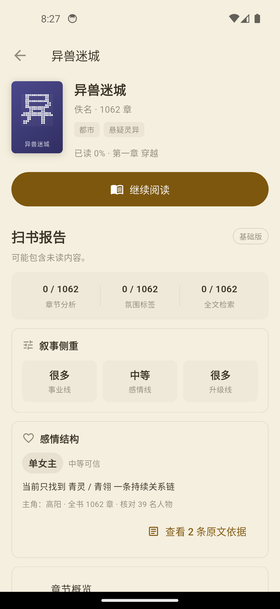
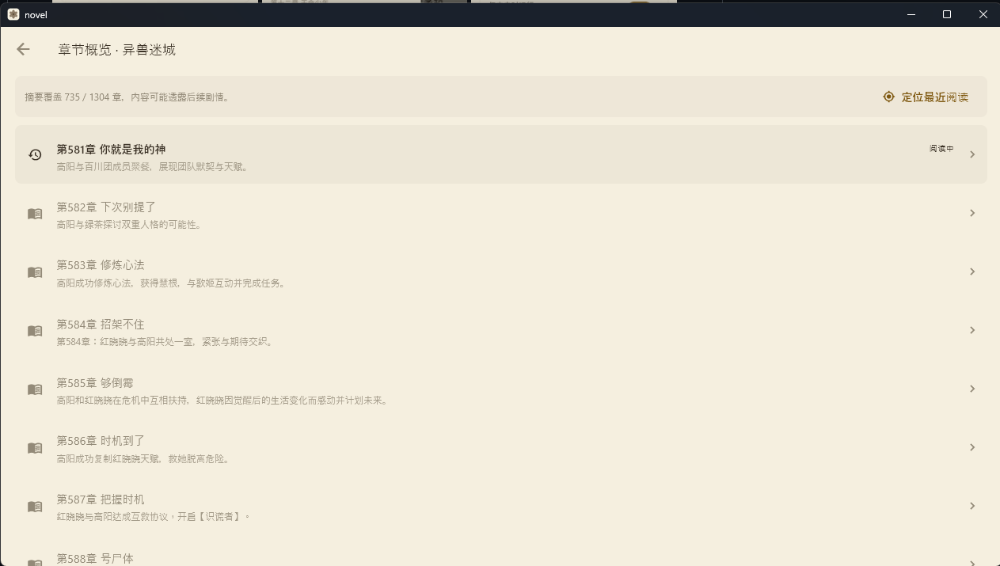
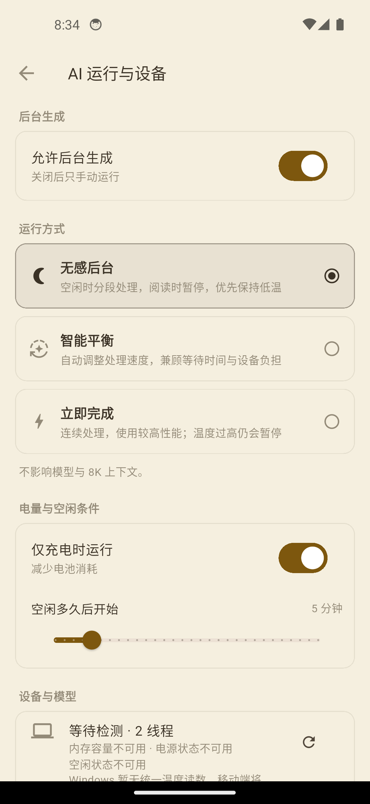
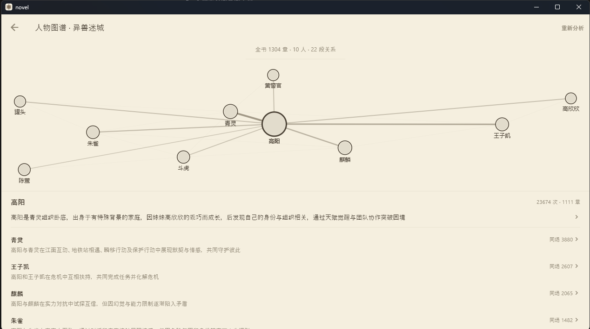

01 / 阅读前
扫书报告
人物图谱、感情结构、节奏、叙事侧重和排雷片段，并尽量回到原文章节查看依据。
长篇网文在阅读前和阅读中需要不同的答案，Novel 为这两个时刻分别设计入口。
人物图谱、感情结构、节奏、叙事侧重和排雷片段，并尽量回到原文章节查看依据。
章节概览、人物查询、语义搜索、阅读位置恢复，以及不会打断阅读的原文标注。
轻量模型和可复查规则在本地运行，数据、负载和判断依据都交给用户掌控。
以下展示聚焦当前真正支持的中文网文体验：人物关系、章节概览、氛围节奏和边缘设备负载。




把模型放进手机只是起点，Novel 会围绕读者、剩余电量和设备状态调整工作方式。
切成小片、拉长间隔，并在可能时卸载模型，让手机陪你阅读。
以稳定速度后台处理章节分析和检索，同时保持设备响应。
在温度和电量限制允许的范围内使用更多资源，尽快完成当前请求。
每一小段任务开始前都会参考充电状态、电量、温度、空闲时间、内存压力和任务优先级。负载模式调整调度、线程、间隔和模型驻留方式，不改变经过调试的 8K 上下文。